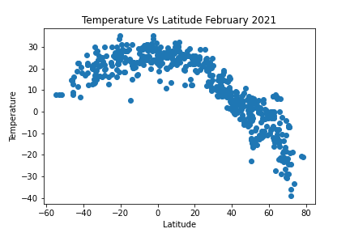
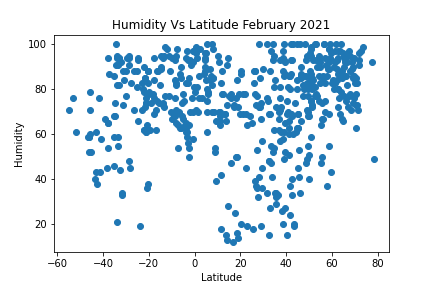
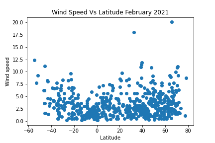

Summary: Latitude vs X
 Temperature of selected regions versus latitude.Temperature appears to decrease with distance from the equator. Countries in regions closer to the equator experience higher temperature than those further away
Humidity Vs Latitude
 Humidity of selected regions versus latitude.Humidity pattern appears to be more varied than temperature as one moves away from the equator Humidity is lowest around the equator.
Cloud Vs Latitude
 Clouds pattern of selected regions versus latitude.
Clouds pattern of selected regions versus latitude.
Cloud pattern is even more difficult to predict with regions' latitude. As would be expected, it appears that clouds are generally lighter around the equator.
Wind Speed Vs Latitude
 Wind speed of selected regions versus latitude.Wind speed increases as region latitute approaches the equator. This may be due to higher temperature and lighter clouds which give strengthens the wind and reduces the load of clouds the wind has to carry respectively
- a href="
- a href="